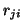
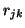
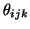
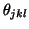
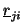
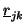
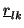
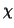

The internal coordinates used to calculate the energy expressions for many body intercations are described below. The internal coordinates are defined between the cores, and not shells, of atoms.
The length of a bond between two atoms in a molecule is straightforward to visualise, and is simply calculated as the magnitude of the vector (r) between the two atoms (i and j) (figure 3).
The angle between two adjacent bonds in a molecule, or the angle formed by the three nuclei i, j and k is calculated using the dot product of the two vectors from j to i (

) and j to k (
) as shown in figure 4.
A torsion angle about a bond j - k is defined for any four sequentially bonded atoms in a molecule, i, j, k and l and made by the angle between the planes formed by the two angles

and
(Figure 3.4). The torsion angle is then calculated by taking the dot product of the normal unit vectors of these two planes, each of which is calculated from the vector cross products of
with
and of with
as shown in figure 5.
An out-of-plane angle needs to be defined when an atom in a molecule is bonded to just three other atoms (central atom i bonded to atoms j, k and l), and the out-of-plane angle (

) is defined as the average of the three improper torsions formed by the interaction.The improper torsion definition uses the torsion angle expression above to calculate the torsion angle formed by the atoms i - k - l - j, which is the angle between the plane formed by the three atoms i, k, l and the plane formed the atoms k, l and the central atom i. It is so called improper as the torsion is about two atoms that are not bonded together.
The analytical derivatives of these expresions are used by the code to calculate the gradients of the energy analytically, which allows both MD and minimisation calculations to be performed efficiently. The code also allows the forces on atoms calculated analytically to be checked by a numerical interpolation of the energy (see section 4.2.13).